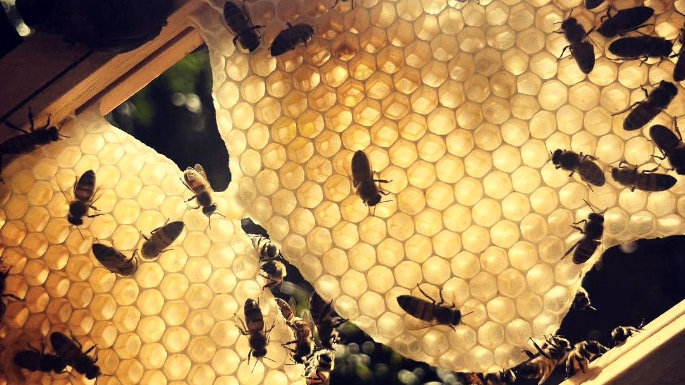

Мед, квітковий пилок і перга — три продукти пасіки, які цінують за склад і поживність. Тут зібрано, що в них є й чим їх цінують.
Приблизно 80 % меду складають цукри, переважно фруктоза й глюкоза, ще 17–20 % — вода. До цього додаються ферменти, органічні кислоти, мінерали, вітаміни та ароматичні речовини, але в невеликих кількостях. Докладно про це на сторінці «Користь меду». Мед лишається цукром, тому його вживають помірно: орієнтири ВООЗ у статті «Скільки меду на день».
Квітковий пилок і перга цінні насамперед як джерело білка й амінокислот, а ще в них є жирні кислоти, вітаміни та мінерали. Що саме й у якому вигляді, читайте на сторінках «Користь квіткового пилку» і «Користь перги». Чим пилок відрізняється від перги, пояснюють «Квітковий пилок» та «Перга».
Прополіс бджоли роблять із речовин, які збирають із бруньок і кори дерев, і ним заліплюють шпарини у вулику (про прополіс). Із воску бджоли будують стільники, а з нього ж роблять свічки (про віск і свічки).
Усі ці продукти можуть викликати алергію, особливо пилок, перга й прополіс. Дітям до року мед не можна. Окремо про обережність під час діабету, вагітності чи прийому ліків: у таких випадках спершу порадьтеся з лікарем. Перелік зібрано на сторінці «Кому обережно», про дітей ідеться в статті «Мед і діти».
На цьому сайті немає порад із лікування: тільки те, що є в продуктах і чим їх цінують. Якщо у вас захворювання, питання вживання обговорюйте з лікарем.
Чи мед — це просто цукор?
Склад меду переважно цукри, але в ньому є й інші речовини: ферменти, кислоти, мінерали. Різницю описує стаття «Мед чи цукор».
Який продукт найкращий?
Я не ставлю їх у рейтинг: вони різні за складом, смаком і способом вживання.
Від чого залежить склад меду?
Від рослин, з яких зібрано нектар, і від року. Тому мед щороку різний.